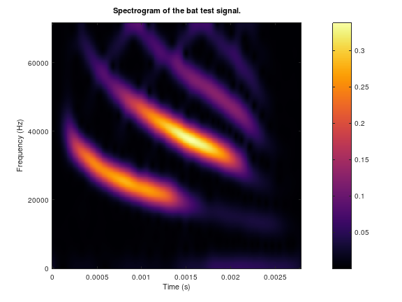
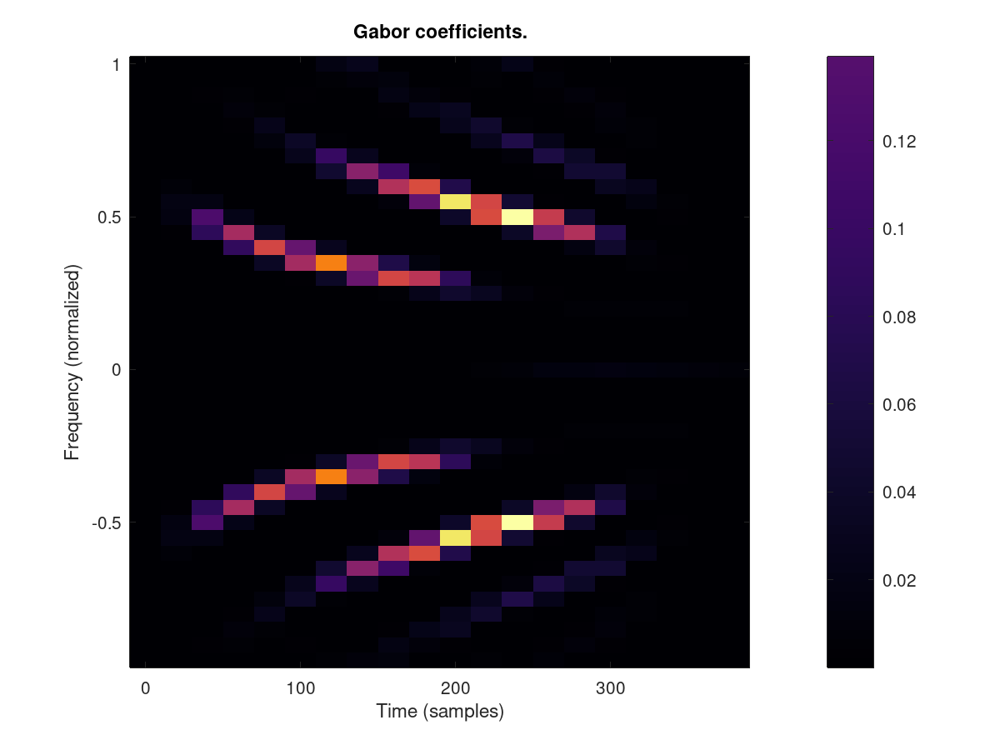
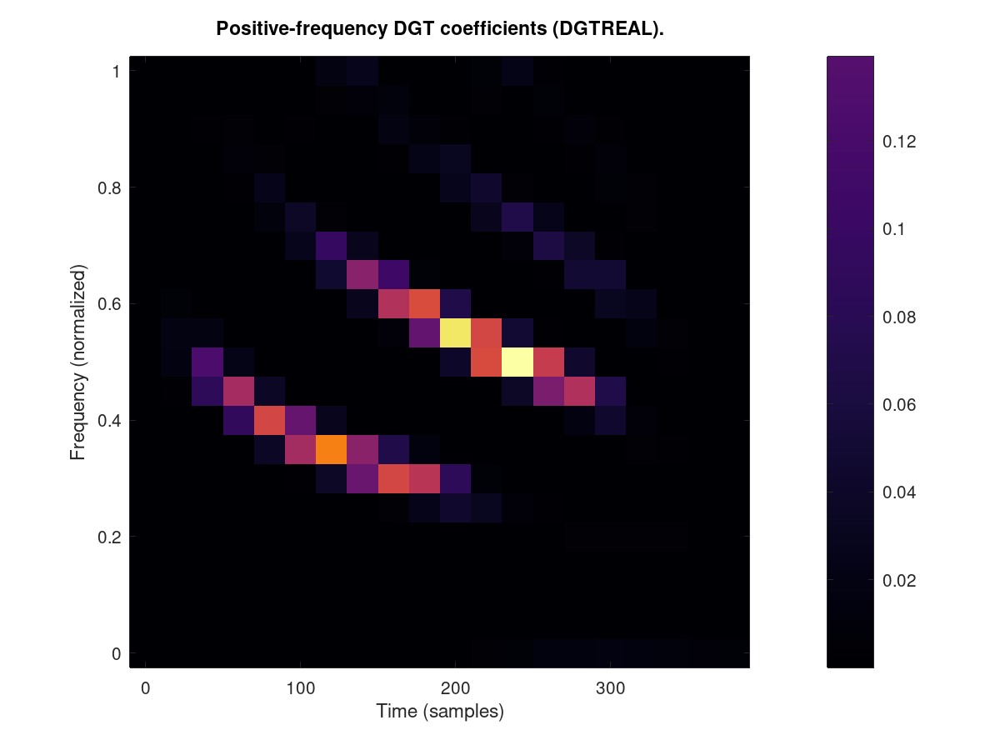
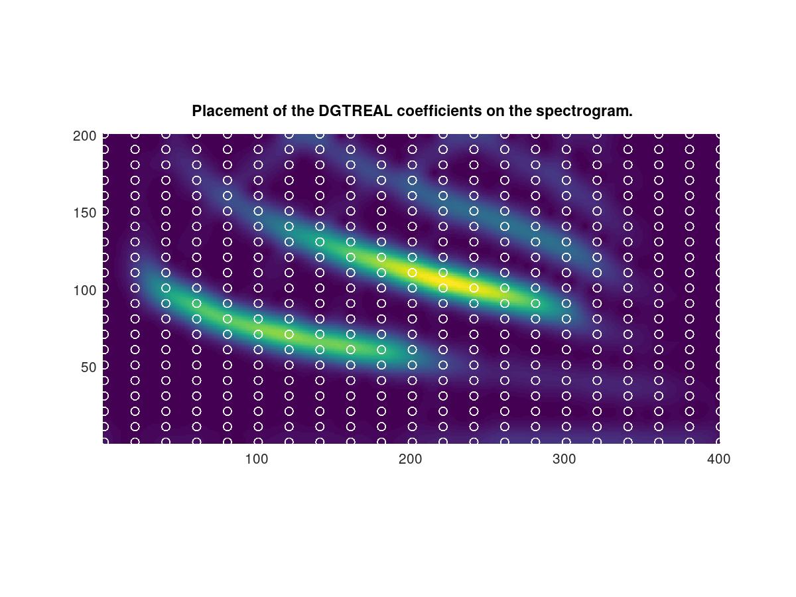

DEMO_DGT - Basic introduction to DGT analysis/synthesis
Description
This demo shows how to compute Gabor coefficients of a signal.

Spectrogram of the 'bat' signal.
The figure shows a spectrogram of the 'bat' signal. The
coefficients are shown on a linear scale.

Gabor coefficients of the 'bat' signal.
The figure show a set of Gabor coefficients for the 'bat' signal,
computed using a DGT with a Gaussian window. The coefficients
contains all the information to reconstruct the signal, even though
there a far fewer coefficients than the spectrogram contains.

Real-valued Gabor analysis
This figure shows only the coefficients for the positive
frequencies. As the signal is real-value, these coefficients
contain all the necessary information. Compare to the shape of the
spectrogram shown on Figure 1.

DGT coefficients on a spectrogram
This figure shows how the coefficients from DGTREAL can be picked
from the coefficients computed by a full Short-time Fourier
transform, as visualized by a spectrogram.